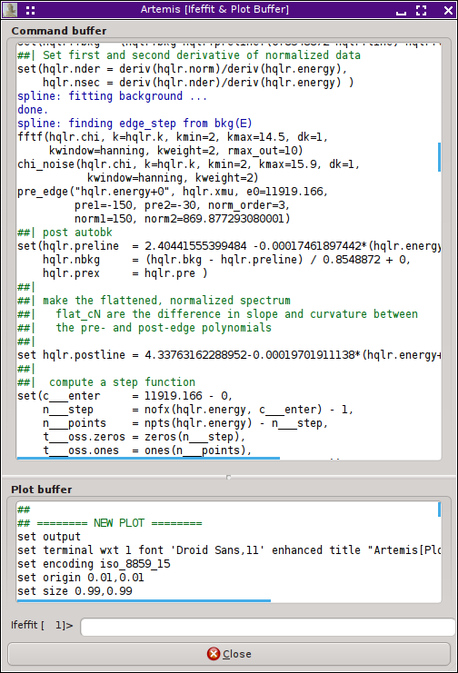
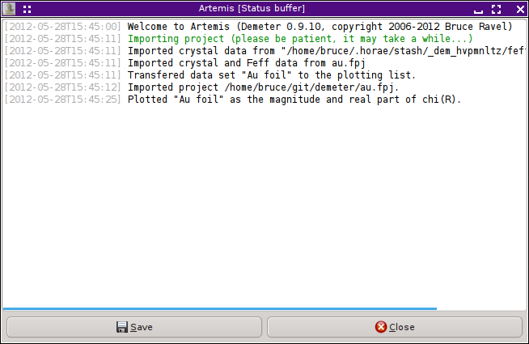

Monitoring things
ARTEMIS provides a number of tools for keeping track of things
going on behind the scenes. These tools are found either in the
Monitor menu on the Main window or the Debug menu on the Data window.
In the normal course of operations, consulting the monitoring tools
should not be necessary. But if something is not working quite right,
they can be invaluable for diagnosing the problem.
Command and status buffers
The Command buffer

The command buffer window contains a record of every data processing
and fitting command sent to IFEFFIT. At the bottom of this window
is the plotting buffer, which contains every command sent to the
plotting backend (usually Gnuplot).
These are very useful both for diagnosing problems and for learning
the details of how IFEFFIT and Gnuplot work.
At the bottom of the window is a simple command line for sending
instructions directly to IFEFFIT.
The Status buffer
|

Every message sent to any of the status bars in ARTEMIS is
time-stamped and logged in the status buffer. This provides a sort of
record of the major actions taken during your current ARTEMIS
session. The contents of this buffer can be saved to a file.
Interacting with Ifeffit
|
 One of the submenus in the Monitor menu on the Main window allows you
to examine IFEFFIT data structures. The results of these
examination commands are displayed in the command buffer. In this
example, all arrays currently defined in IFEFFIT have been shown.
One of the submenus in the Monitor menu on the Main window allows you
to examine IFEFFIT data structures. The results of these
examination commands are displayed in the command buffer. In this
example, all arrays currently defined in IFEFFIT have been shown.
Options exist for showing specific IFEFFIT data group, all arrays,
all scalars, all strings, all paths, or all FEFF paths. The last
one is simply a listing all feffNNNN.dat
files imported into IFEFFIT.
You can also inquire about how much of IFEFFIT's statically
allocated memory is in use and whether you are in danger of exceeding
capacity. This information is displayed in the Main window status
bar.
Debugging Demeter
Several additional menu items are turned on when
♦Artemis → debug_menus
is set to a true value. The items in these menus provide tools for
debugging ARTEMIS by showing the current state of DEMETER and
its data structures. These tools are invaluable for developing the
software, but are probably of limited value to the general user.
|